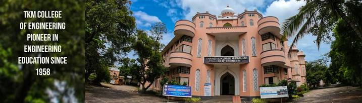

Gallery


TKM College of Engineering
The Thangal Kunju Musaliar College of Engineering, commonly known as TKMCE, is the first government aided engineering institution in the Indian state of Kerala. It is located in the Karikode neighborhood, 6 kilometres (3.7 mi) from the city of Kollam in southern Kerala. The college was affiliated to Kerala University till 2014 before joining the then newly formed APJ Abdul Kalam Technological University.The college was founded by the TKM Educational Trust,[1] an organization established by Sri, Janab Thangal Kunju Musaliar. The college's foundation stone was laid on 3 February 1956 by Dr. Rajendra Prasad, the first President of India, and was inaugurated by Prof. Humayun Kabir, the Cabinet Minister for Scientific and Cultural Affairs, on 3 July 1958. The institution then went on to become the first self financed private engineering college and the second engineering college (after CET) in the Kerala state,[1] before acquiring the government aided status.